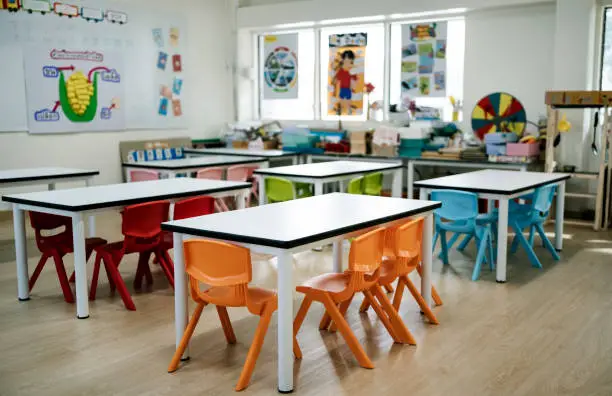
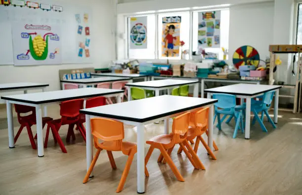
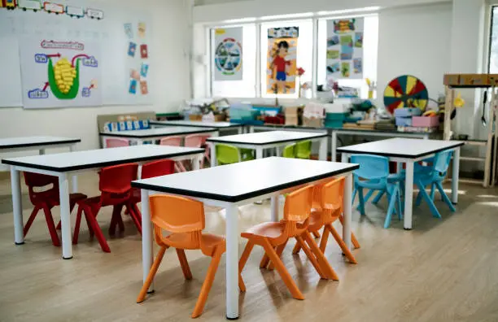
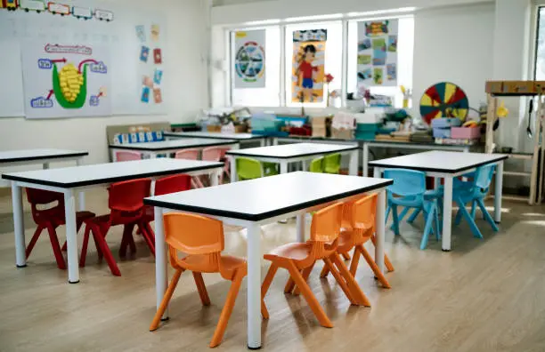
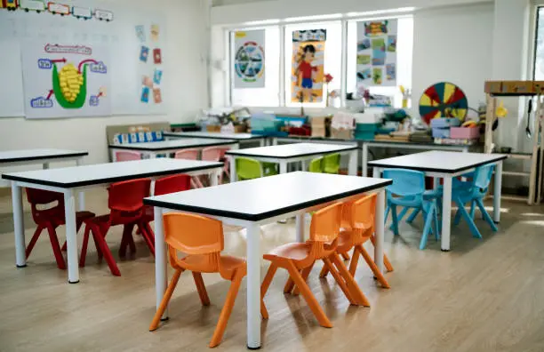
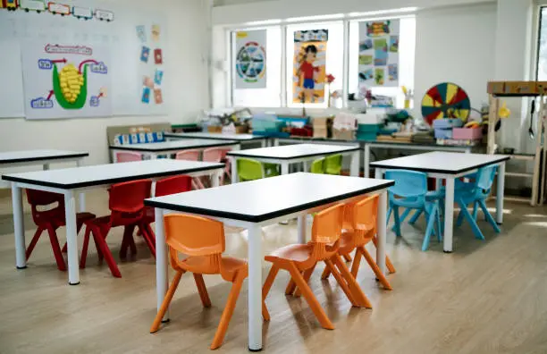

L’école maternelle Le Petit Quinquin est un établissement public de l’Académie de Lille, situé au 72 bis rue de l’Ancienne Balaterie, 59160 Lomme. Ministère de l'Éducation nationale +1 Elle accueille des enfants en petite, moyenne et grande sections maternelles. Adresses Écoles +1 L’école dispose d’une cantine et propose un service de restauration scolaire
Association Lumières Solidaires Lumières Solidaires est une association à but non lucratif dédiée à l’accompagnement des personnes en situation de précarité. Elle organise des collectes alimentaires, des ateliers d’insertion professionnelle et des actions de sensibilisation dans les écoles. Grâce à un réseau de bénévoles engagés, l’association œuvre chaque jour pour renforcer la solidarité locale et redonner espoir aux personnes les plus vulnérables.